Next: 8.4 Construction of the Up: 8. Values, gradients, and Previous: 8.2 Minimisation concepts Contents Index
In model-free analysis four different combinations of parameters can be optimised, each of which requires a different approach to the construction of the chi-squared value, gradient, and Hessian. These categories depend on whether the model-free parameter set
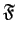
, the diffusion tensor parameter set
 , or both sets are simultaneously optimised. The addition of the local
, or both sets are simultaneously optimised. The addition of the local  parameter to the model-free set
creates a fourth parameter combination.
parameter to the model-free set
creates a fourth parameter combination.
This is the simplest category as it involves solely the optimisation of the model-free parameters of an individual residue while the diffusion tensor parameters are held constant. The model-free parameters belong to the set
 of the residue
of the residue  . The models include
. The models include  to
to  and the dimensionality is low with
and the dimensionality is low with
| (theparentequation.3) |
for the most complex model . The relaxation data of a single residue is used to build the chi-squared value, gradient, and Hessian.
The addition of the local  parameter to the set
parameter to the set
 creates a new set of models which will be labelled
creates a new set of models which will be labelled
 . These include models
. These include models  to 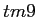
. The local
to 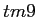
. The local  parameter is the single member of the set
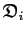
and in set notation
parameter is the single member of the set
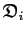
and in set notation
| 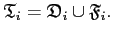 | (theparentequation.4) |
Although the Brownian rotational diffusion parameter local  is optimised, this category is residue specific. As such the complexity of the optimisation is lower than the next two categories. It is slightly greater than the optimisation of the set
is optimised, this category is residue specific. As such the complexity of the optimisation is lower than the next two categories. It is slightly greater than the optimisation of the set
 as
as
| (theparentequation.5) |
where  is the number of model-free parameters.
is the number of model-free parameters.
The parameters of the Brownian rotational diffusion tensor belong to the set
 . This set is the union of the geometric parameters
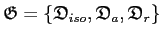
and the orientational parameters
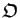
,
. This set is the union of the geometric parameters
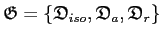
and the orientational parameters
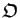
,
| 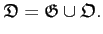 | (theparentequation.6) |
When diffusion is spherical solely the geometric parameter
is optimised. When the molecule diffuses as a spheroid the geometric parameters
and
 and the orientational parameters
and the orientational parameters  (the polar angle) and
(the polar angle) and  (the azimuthal angle) are optimised. If the molecule diffuses as an ellipsoid the geometric parameters
,
(the azimuthal angle) are optimised. If the molecule diffuses as an ellipsoid the geometric parameters
,
 , and
, and
 are optimised together with the Euler angles 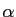
, 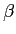
, and
.
are optimised together with the Euler angles 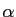
, 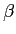
, and
.
This category is defined as the optimisation of solely the parameters of
 . The model-free parameters of
are held constant. As all selected residues of the macromolecule are involved in the optimisation, this category is global and can be more complex than the optimisation of
. The model-free parameters of
are held constant. As all selected residues of the macromolecule are involved in the optimisation, this category is global and can be more complex than the optimisation of
 or
or
 . The dimensionality of the problem nevertheless low with
. The dimensionality of the problem nevertheless low with
| (theparentequation.7) |
for the diffusion as a sphere, spheroid, and ellipsoid respectively.
The global model is defined as
| (theparentequation.8) |
where  is the residue index and
is the residue index and  is the total number of residues used in the analysis. This is the most complex of the four categories as both diffusion tensor parameters and model-free parameters of all selected residues are optimised simultaneously. The dimensionality of the model
is the total number of residues used in the analysis. This is the most complex of the four categories as both diffusion tensor parameters and model-free parameters of all selected residues are optimised simultaneously. The dimensionality of the model
 is much greater than the other categories and is equal to
is much greater than the other categories and is equal to
| (theparentequation.9) |
where
is the number of model-free parameters for the residue  and is equal to
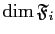
, the number six corresponds to the maximum dimensionality of
and is equal to
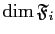
, the number six corresponds to the maximum dimensionality of
 , and the number five corresponds to the maximum dimensionality of
, and the number five corresponds to the maximum dimensionality of
 .
.